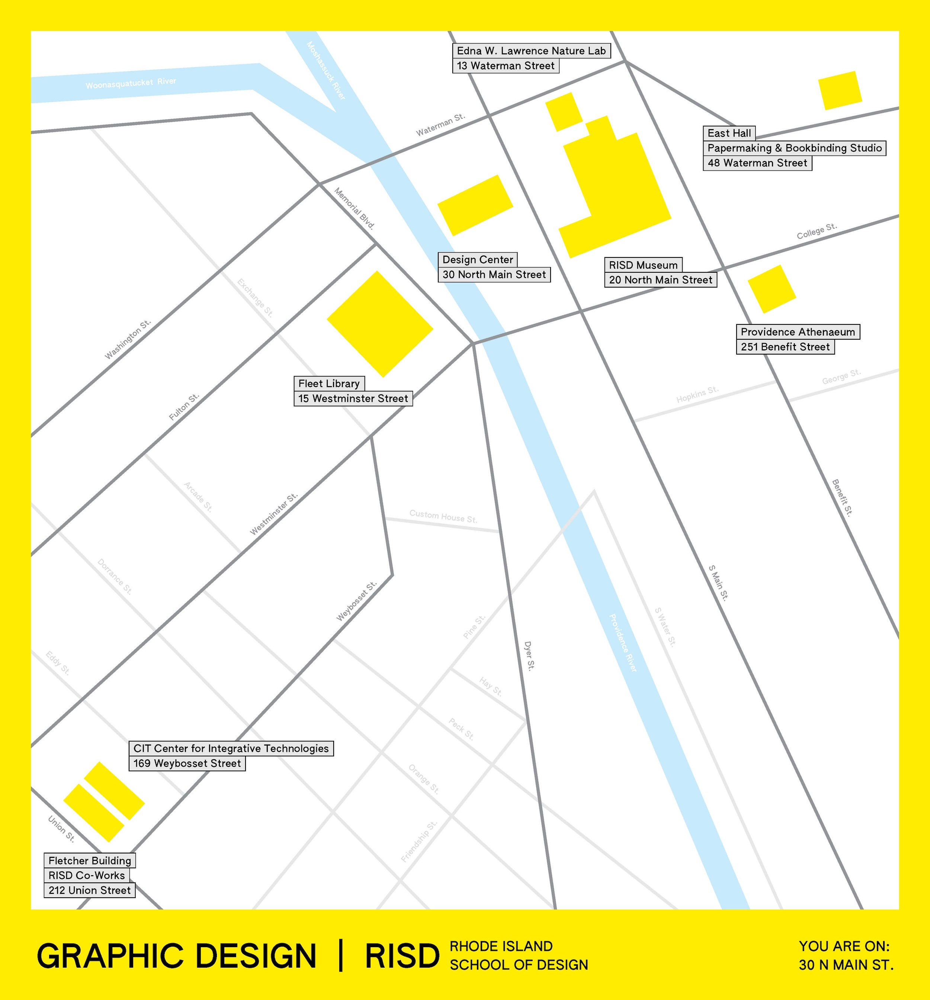
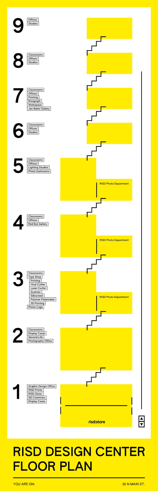
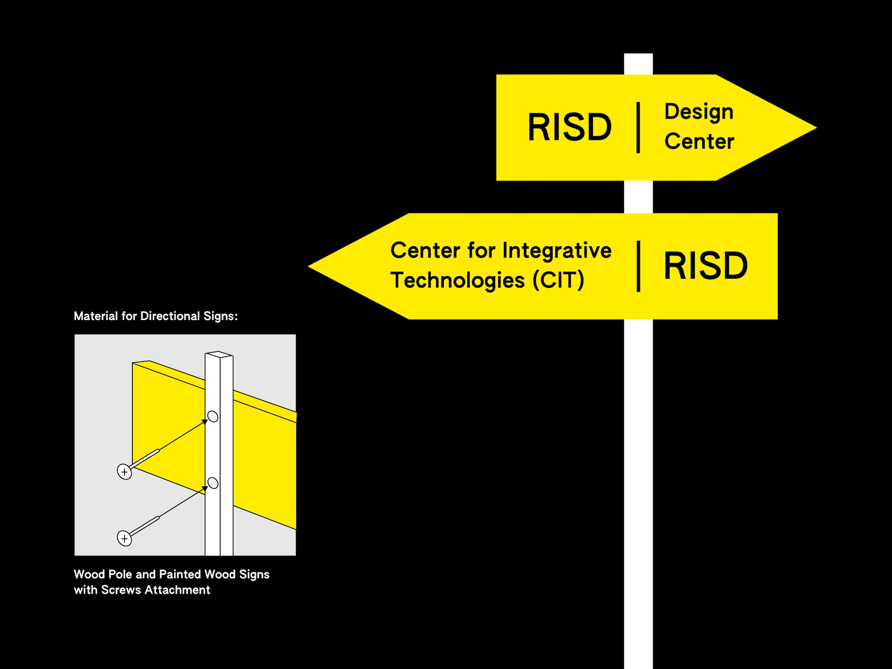

This project is a custom-designed wayfinding system for the Graphic Design building at Rhode Island School of Design, helping both undergraduate and graduate students, and visiting guests and critics to find their way to designated locations. The design includes a full building map of the Design Center from floor 1 through 9. It also includes the contexts of a broader map of RISD Campus in Providence to highlight each building’s placement within the city. The street wayfinding signs were designed to be installed outdoors, guiding pedestrians from nearby intersections to the correct entrances. All maps and signs were scaled with human-size ratio references to ensure legibility in real-world conditions.



